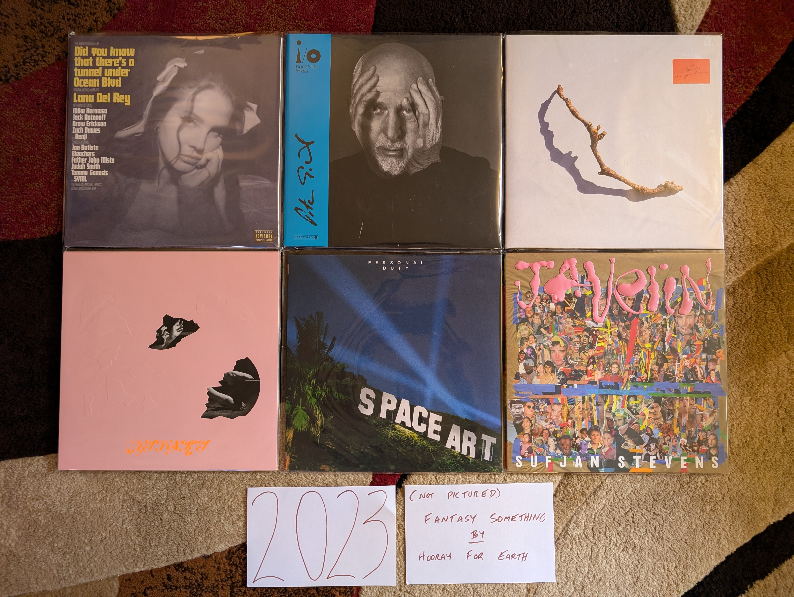

2023 Albums¶
For the first time, I find myself a full year behind in adding to the modern day releases here. Partially, this is because I have been distracted with other hobbies (most notably a return to both running and bowling) but also because I kept hoping that additional releases might join those listed below. It seems like things have lost momentum a bit from the pandemic years, but that might be just because I have more going on my life now, and less time to focus on Animal Crossing and pop music like some sort of teenager. Every one of the albums comes from an artist that already had one (or more) in my lists of past years. Have I permanently slipped into the backward focussed attention of middle age? Or is this just a dry spell before a go in a totally new direction. Since I am a year behind on this project, I already know the answer, and can now say it is a bit of both.
{kind=link}
Did You Know There’s A Tunnel Under Ocean Blvd by Lana Del Rey - Not quite as amazing as the last three records, but that is a fairly high standard. The weird interludes break up the album in a way that detracts from the songs, and there are a couple weaker than usual tunes. That said, the title song, “Paris, Texas”, and “Peppers” stand among her finest work. The biggest surprise is the return of the hip hip inclinations of her debut in a way that we haven’t heard in some time. This isn’t the full album statement we have come to expect, but is still way above what most artists are producing today. [Memory: In February/March of 2024 I was walking before work, working my way back from a prolonged knee injury. This album fit well with the chilly pre-dawn mornings.]
i/o by Peter Gabriel - A theme of the last few years has been unexpectedly strong releases from legacy artists that have done very little for the last decade or two. In the case of this record, the artist has returned to doing exactly what they have always done, and did it extremely well. This fits in cleanly with the sound of the records that preceded it, and manages to be his best work since the third of the self-titled albums. I hope he makes more music, but if not, the strangely positive “Live and Let Live” is the perfect note for one of the all time greats to say goodbye on. [Memory: There are two different mixes of this albums, and I needed to pick my favorite when I bought my vinyl copy. It was tough but I went with the dark-side mix that I prefer by the thinnest of margins.]
I Inside the Old Year Dying by PJ Harvey - Polly’s transition to and English folk musician, combined with 21st century Kate Bush dance technique is complete. In all seriousness, this a very different place from where she started, but amazing in its own unique way. We continue to get a combination of the latter day “church voice” vocals and the old-school growling techniques. The music also seems to pull from the full history of her catalog. The mood of the record is however very consistent from start to finish with a haunting, claustrophobic sound. Her only other record that sounds anything like this is White Chalk but even that connection is tenuous and brief. One thing she will never do is repeat herself. [Memory: I saw her in concert in Toronto in September of 2024. The performance included the entirety of this record played in sequence, followed by a selection of back catalog material. It was delightful and somewhat shocking to hear this wonderful album played side by side with the older material which for the most part, felt like the work of an entirely different artist.]
Fantasy Something by Hooray for Earth - [2023 FAVORITE] - Even though this is essentially the work of a single person, I was still shocked by the sudden revival of this project. I thought for sure that Noel Heroux had moved on from this kind of thing, and I was overjoyed to hear the most complex and accomplished work thus far released under this name. This isn’t easy music, and it almost demands that someone has been listening since the first release of the project, but for those of us who have been, the combination of glitchy samples and churchlike melodies is the perfect next step. Let’s hope it’s not the last. [Memory: He did a bandcamp fundraiser for a vinyl physical release of this, which unfortunately didn’t succeed. For a moment I considered offering to front the remaining needed funds to make the pressing happen.]
The Land is Inhospitable and So Are We by Mitski - A scaling back after the big, risk-taking of the last album was inevitable. The public had decided the last release was a bit much, and the artist obliged with a more straightforward, but still very enjoyable alt-folk record. The strong songwriting ensures that it still works, even if I would prefer a bit more of the risks from the last record. [Memory: I bought this on physical media not knowing a thing about it since I enjoyed the last album so much. I learned to appreciate this more subtle statement after time. Would I have done so if I only streamed it?]
Personal Duty by Space Art - These guys went from zero to one of my all-time favorites in the space of a few weeks (more on this when I get to the 70s/80s). Then the last original member passed away leaving this last album as a final statement. The same wonderful combination of vintage synths and drums as the classic records, this time with some modern production values that sound a little like Daft Punk and the other artists that obviously owe a great debt to their work. It all works amazingly well, except for the strange “Goree Island” which feels a little too unserious for the very serious subject matter it is taking on. [Memory: I imported this on vinyl directly from the French label that put it out. I only wish I had done it a bit earlier to get an autograph by the artist, who isn’t around to sign further copies.]
Javelin by Sufjan Stevens - My favorite record of his since the legendary Illinois, now we are back to the kind of experimentation that he does best. The first song “Evergreen” almost seems to lure in the more casual listeners who came onboard with the more straightforward folk of Carrie and Lowell, and then takes an abrupt left turn that makes the glitchiness of The Age of Adz seem tame. From there it feels like a summary of why Sufjan is one of the greatest musicians working today. [Memory: Sufjan had always kept the issue of his sexuality ambiguous. This album and the accompanying promotional tour changed that in the very saddest way possible.]